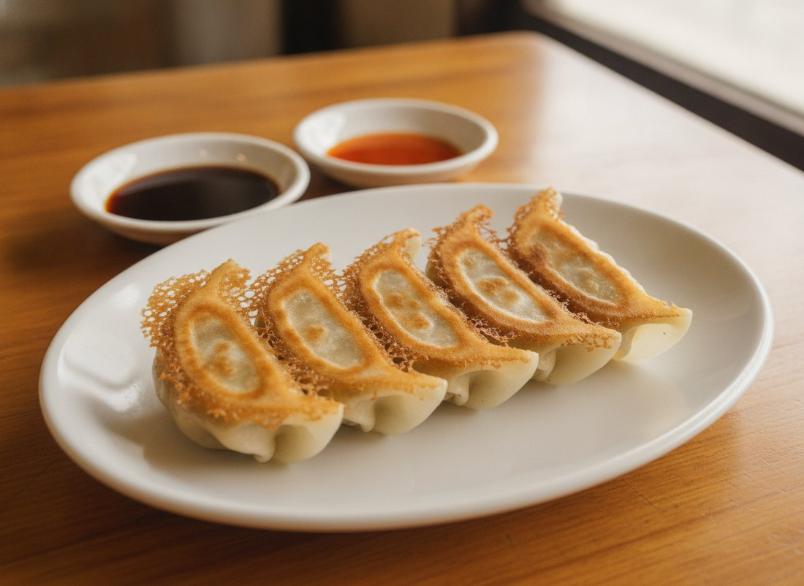
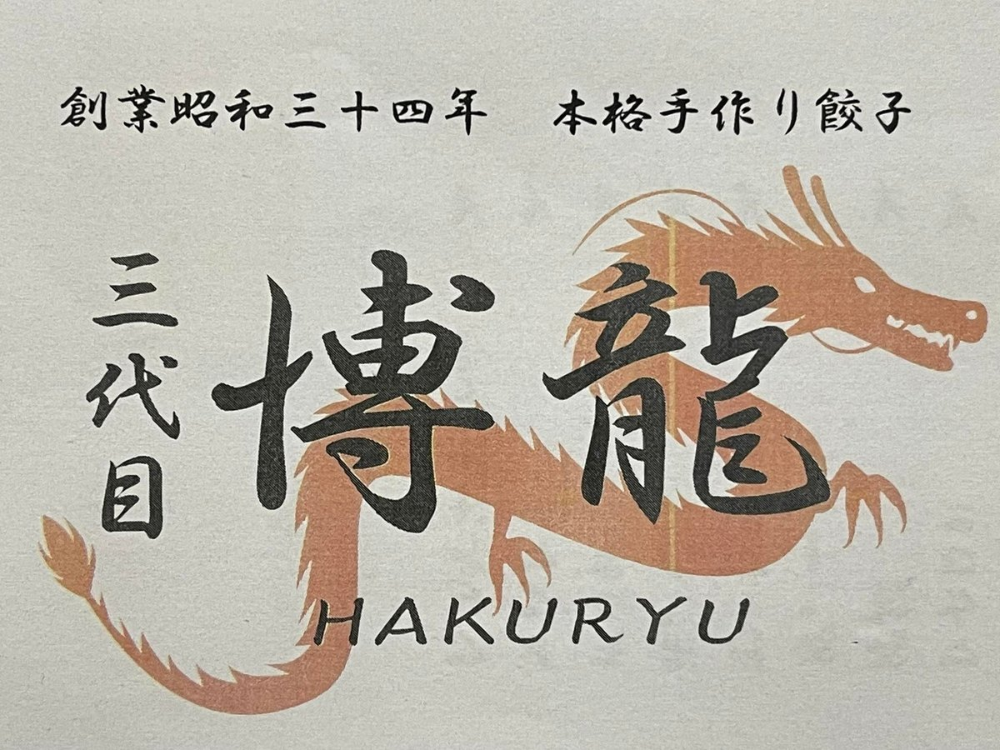
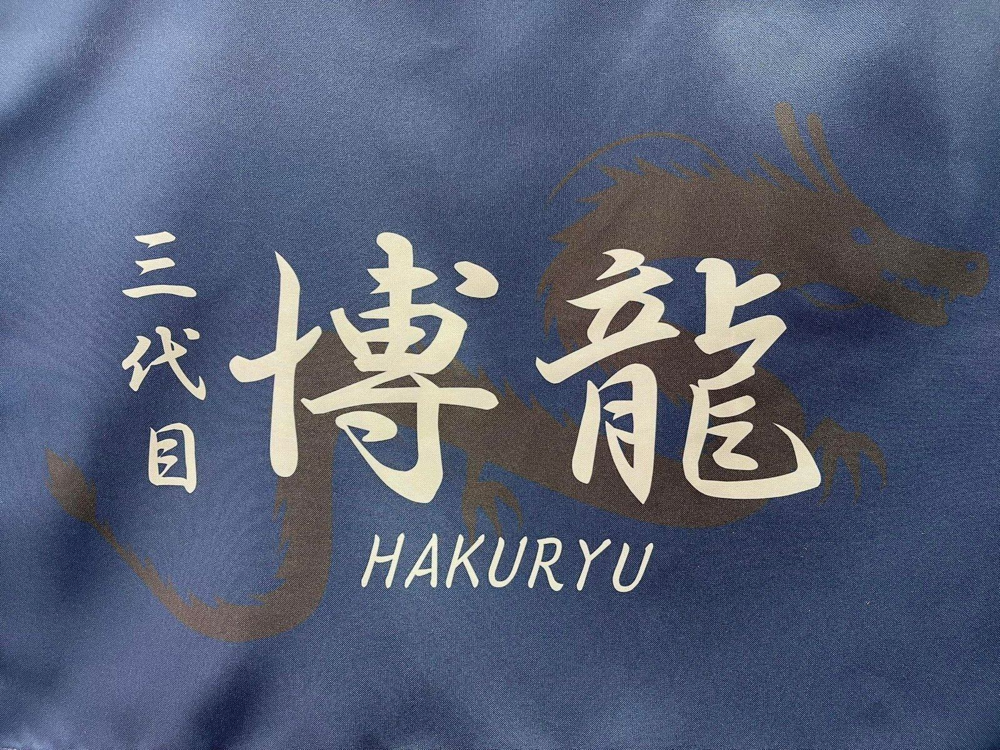

手作りの餃子
クチコミでいちばん多く名前が挙がるのが、餃子です。「モチモチの厚めの皮にギュッと詰まった肉肉しい餡」と書かれています。
MACHI-CHUKA SINCE 1959 — KAMIFUKUOKA
創業、昭和三十四年。
本格手作り餃子の町中華です。
11:30〜22:00｜月曜・火曜定休｜上福岡駅 徒歩約2分
※料理・店内の画像はイメージです
ABOUT
上福岡駅から歩いて2分ほど。創業は昭和三十四年、この街で長く続いてきた町中華です。二〇二五年の七月に「三代目 博龍」として、新しく暖簾を掲げました。
クチコミには「ザ町中華に沖縄好きの店主の好みがプラスされた老舗の中華料理屋。」と書かれています。店にはシーサーが置かれ、お品書きには沖縄風ラーメンが並びます。
この段落の鉤括弧の引用は、Googleマップのクチコミより。

SINCE 1959
店主は沖縄がお好きで、Instagramのお知らせは「はいさい！」から始まります。店先の軒には、店主が「当店の南国生まれのシーサー」と呼ぶ焼き物が並んでいます。
この十月で、創業六十七年を迎えます。
この段落の鉤括弧の引用は、Instagram（@hakuryu.1018）の投稿より。

はいさい。
上福岡の、町中華です。
※画像はイメージです
SHOP INFO
| 店名 | 三代目 博龍（はくりゅう） |
|---|---|
| 住所 | 埼玉県ふじみ野市上福岡1-2-11 |
| アクセス | 上福岡駅から徒歩約2分 |
| 営業時間 | 11:30〜22:00 |
| 定休日 | 月曜・火曜 |
| 席 | カウンター席・テーブル席 |
| 駐車場 | アリヤマ駐車場の10番・11番（2台） |
| 喫煙 | 終日全席禁煙 |
| 電話 | 049-261-1467 |
営業時間・定休日は、お店に掲げられた「ご案内」によります。
変わることがありますので、お出かけ前にお電話でご確認ください。
お隣のアスファルトの駐車場は、当店のものではありません。
CONTACT
ご連絡・ご質問は、お電話またはInstagramへお気軽にどうぞ。
月ごとのお休みは、Instagramでお知らせしています。